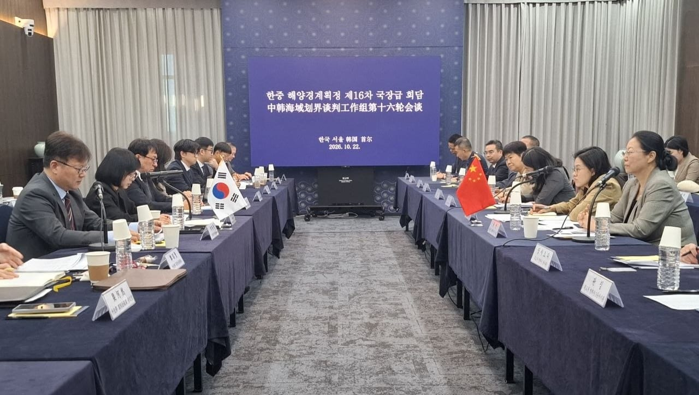
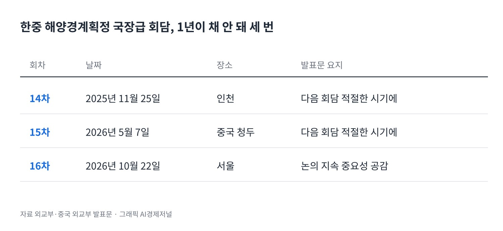
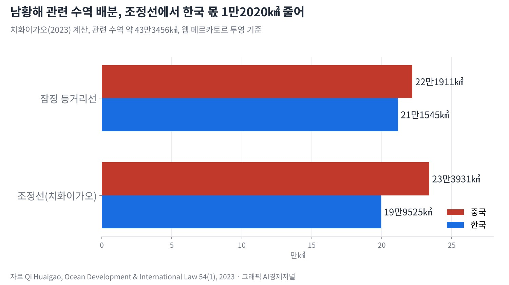
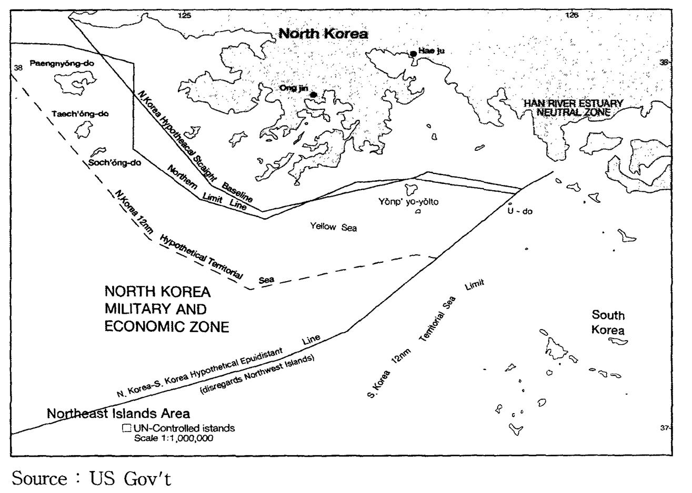
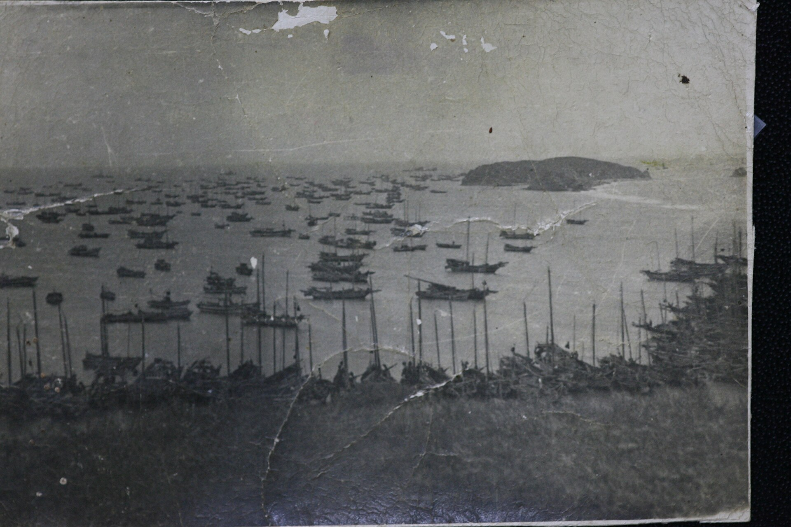

[해양경계] 한중 해양경계 16차 회담, 서해5도 앞에서 멈춘 세 경계선
중국 학자 추정 북위 37도 이북은 1단계 협상 밖, 한국 몫도 축소
중국 정부 "구조물은 경계와 무관", 중국 학자 "경계 논쟁서 비롯"
AI경제저널=김갑봉 기자 | 한국과 중국이 지난 10월 22일 서울에서 해양경계획정 제16차 국장급 회담을 열었다. 외교부는 양측이 "관련 논의를 지속해 나가는 것이 중요하다"는 데 인식을 같이했다고 밝혔다. 서해 경계를 다룬 한중 연구자 논문을 함께 읽으면 협상이 더딘 까닭이 보인다. 한중 경계도, 북중 경계도 서해5도 앞에서 멈춘다.
해양경계는 어업과 해상 단속, 해저자원의 관할을 가르는 선이다. 인천 앞바다와 서해5도 바다가 어느 협상에서 어떻게 다뤄지는지는 인천 어민과 섬 주민의 생업과 맞닿아 있다.
서울 16차 회담, 1년 새 세 번째

수석대표는 이석주 외교부 국제법률국장과 궈옌 중국 외교부 동황해사무대표다. 우리 대표단에는 외교부와 해양수산부, 국방부, 해양경찰청, 국립해양조사원, 한국해양과학기술원이 참여했다.
14차는 2025년 11월 25일 인천, 15차는 2026년 5월 7일 중국 청두에서 열렸다. 1년이 채 안 되는 사이 세 번 만났다. 두 나라 발표문 어디에도 협의 내용은 나오지 않는다. 중국 외교부는 17차를 "적절한 시기"에 열기로 했다고 적었다.

외교부는 이 회담이 2014년 한중 정상 합의에 따라 2015년부터 공식 가동됐다고 밝혔다. 협상의 뿌리는 더 길다. 이석우 인하대 법학전문대학원 교수와 세계해사대학교(WMU)의 클라이브 쇼필드는 국장급 회담이 1996년부터 열렸다고 적는다.
두 사람은 2020년 미국 아시아연구소(NBR) 보고서에서 이 경과를 정리했다. 2025년 논문에서는 협상이 재개된 뒤 10년 동안에도 진전이 더디다고 분석한다.
북위 37도에서 끊긴 협상 구역
중국 푸단대 국제문제연구원 치화이가오는 2023년 논문에서 한중이 1단계 획정 구역에 예비 합의를 했을 것으로 추정한다. 공개 자료로 짠 추정이다. 그가 잡은 범위는 북위 37도와 북위 32도 사이다. 2000년 한중어업협정 대상 수역의 북쪽 한계가 북위 37도라는 점을 근거로 든다.
북위 37도선은 산둥반도에서 충남 서산 대산읍 독곶리 앞까지 이어진다. 인천 앞바다와 서해5도는 그 선 위에 있다. 그의 추정대로라면 인천 바다는 1단계 협상 구역 밖에 놓인다.
이석우·쇼필드도 같은 곳을 짚는다. 두 사람은 북쪽은 북한 때문에, 남쪽은 일본과 겹치는 수역 때문에 획정이 복잡하다고 본다. 그래서 한중이 북방한계선(NLL) 주변과 서해5도를 빼고 협상 구역을 좁혀야 할 것으로 내다본다.
중국 연구자와 한국 연구진이 서로 다른 논문에서 같은 자리를 가리킨다. 두 쪽 모두 한중 협상의 북쪽 끝을 남북 문제와 묶어 다룬다.
치화이가오 조정선, 한국 몫 1만2020㎢
치화이가오는 같은 논문에서 남황해 관련 수역을 직접 나눠 봤다. 양국 해안에서 같은 거리에 그은 잠정 등거리선은 중국에 22만1911㎢, 한국에 21만1545㎢를 준다. 그가 쓴 웹 메르카토르 투영 기준 계산이다.
그는 중국 쪽 관련 해안선이 한국보다 2.14배 길다는 점 등을 들어 이 선을 한국 쪽으로 옮긴다. 옮긴 선에서는 중국 23만3931㎢, 한국 19만9525㎢다. 두 선 사이에서 한국 몫이 1만2020㎢ 줄어든다. 잠정조치수역 배분은 1대 1.44로 중국 쪽에 기운다는 것이 그의 계산이다.

한국 쪽 시각은 다르다. 한국해양과학기술원 양희철 선임연구원은 2012년 논문에서 한국의 중간선 원칙과 중국의 형평 원칙이 맞선다고 진단한다. 그는 중국이 말하는 형평이 구체적 획정 방법으로 나온 적이 없다고 본다. 해안선 비율도 중간선을 옮길 요소로 받아들여지기 어렵다고 분석한다.
서해5도에 걸린 100해리

북중 경계도 같은 자리에서 막힌다. 치화이가오는 2020년 논문에서 북중 등거리선의 남쪽 끝점을 두 개로 계산한다. 서해5도가 한국 땅이면 북위 38도16분·동경 123도36분에서 끝난다. 북한 땅이면 약 100해리 남쪽 북위 36도43분·동경 124도02분까지 내려간다.
남북 사이에는 합의된 해상 경계가 없다. 북방한계선의 법적 성격을 두고 국내 학계도 갈린다. 해군사관학교 김태성은 2016년 논문에서 북한이 20년 동안 침묵한 점을 근거로 든다. 북방한계선을 사실상의 해상경계선으로 볼 수 있다는 분석이다.
정태욱 인하대 법학전문대학원 교수는 2022년 논문에서 휴전회담 기록을 따라간다. 그는 정전협정이 서해에 해상 군사분계선을 두지 않기로 했다고 본다. 남북 어느 쪽 주장도 그 원칙에 어긋난다는 결론이다.
북한은 1982년 유엔해양법협약에 서명했지만 비준하지 않았다. 치화이가오에 따르면 북중 사이 1962년 조중변계조약과 1964년 의정서는 두 나라 정부가 전문을 공개하지 않았다.
구조물, "무관"과 "비롯" 사이

경계가 없는 바다에서는 다른 다툼이 생긴다. 2025년 4월 제3차 한중 해양협력대화에서 우리 수석대표는 서해 중국 구조물에 정부의 깊은 우려를 전달했다. 중국 쪽은 구조물이 순수 양식 시설이고 해양경계획정 문제와 무관하다고 설명했다고 외교부는 밝혔다.
중국 다롄해사대 장옌창 교수와 박사과정 쑨캉제는 2026년 논문에서 다르게 적는다. 이들은 구조물 적법성 분쟁이 해양경계획정 논쟁에서 비롯한다고 쓴다. 다만 중국의 심해 양식은 국제법에 어긋나지 않는다는 주장을 편다.
어업 갈등도 이어진다. 2018년 한 해 해양경찰이 나포한 중국 어선은 136척이다. 이석우·쇼필드의 보고서와 김석균 전 해양경찰청장의 한국해양전략연구소 분석이 같은 수치를 적는다.
17차 회담 날짜는 정해지지 않았다. 14~16차 발표문에 서해5도와 북위 37도 위 수역은 나오지 않는다. 한중 협상 구역의 북쪽 끝과 북중 경계의 남쪽 끝은 모두 서해5도 주변에서 만난다.
참고문헌
- Lee, Seokwoo and Schofield, Clive, 「The Challenge of Reconciling Conflicting Approaches across the Yellow Sea: Progress and Challenges for Maritime Boundary Delimitation between China and Korea」, 『The Korean Journal of International and Comparative Law』 13(1), Brill, 2025, 6-48쪽, https://doi.org/10.1163/22134484-12341222
- Qi, Huaigao, 「Maritime Delimitation Between China and South Korea in the South Yellow Sea」, 『Ocean Development & International Law』 54(1), Taylor & Francis, 2023, 26-62쪽, https://doi.org/10.1080/00908320.2023.2182388
- Qi, Huaigao, 「Maritime Delimitation Between China and North Korea in the North Yellow Sea」, 『Ocean Development & International Law』 51(4), Taylor & Francis, 2020, 358-385쪽, https://doi.org/10.1080/00908320.2020.1830506
- Chang, Yen-Chiang and Sun, Kangjie, 「The Role of International Law in Reconciling Maritime Interests: China-South Korea's Yellow Sea Structures Controversy Revisited」, 『Chinese Journal of International Law』 25(2), Oxford University Press, 2026, jmag020, https://doi.org/10.1093/chinesejil/jmag020
- 양희철, 「한중 황해 해양경계획정에서의 고려요소와 대응방안에 관한 연구」, 『국제법학회논총』 57(3), 대한국제법학회, 2012, 107-150쪽
- 김태성, 「서해 북방한계선(NLL)의 국제법적 쟁점 분석」, 『한국군사학논집』 72(2), 육군사관학교 화랑대연구소, 2016, 75-104쪽
- 정태욱, 「서해 해상군사분계선 문제에 관한 휴전회담의 진행경과」, 『동북아법연구』 16(3), 전북대학교 동북아법연구소, 2022, 73-90쪽, https://doi.org/10.19035/nal.2022.16.3.4
- Lee, Seokwoo and Schofield, Clive, "The Law of the Sea and South Korea: The Challenges of Maritime Boundary Delimitation in the Yellow Sea", The National Bureau of Asian Research, 2020.4.23, https://map.nbr.org/wp-content/uploads/2020/09/analysis_lee_schofield_42320.pdf
- 김석균, "코로나 19 전후 불법 중국어선 문제의 현황과 전망: 어떻게 달라졌나?", KIMS Periscope 제357호, 한국해양전략연구소, 2024.8.12, https://kims.or.kr/issubrief/kims-periscope/peri357/
- "한·중 해양경계획정 제16차 국장급 회담 개최(10.22.)", 외교부, 2026.10.22, https://www.mofa.go.kr/www/brd/m_4080/view.do?seq=377681
- "한·중 해양경계획정 제14차 국장급 회담 개최(11.25.)", 외교부, 2025.11.25, https://www.mofa.go.kr/www/brd/m_4080/view.do?seq=376692
- "제3차 한중 해양협력대화 개최(4.23.) 결과", 외교부, 2025.4.24, https://www.mofa.go.kr/www/brd/m_4080/view.do?seq=376043
- "中韩举行海域划界谈判工作组第十六轮会谈", 중국 외교부, 2026.10.22, https://www.mfa.gov.cn/web/gjhdq_676201/gj_676203/yz_676205/1206_676524/xgxw_676530/202610/t20261022_12045385.shtml
- "中韩举行海域划界谈判工作组第十五轮会谈", 중국 외교부, 2026.5.7, https://www.mfa.gov.cn/web/gjhdq_676201/gj_676203/yz_676205/1206_676524/xgxw_676530/202605/t20260507_11906408.shtml
- "Status of the United Nations Convention on the Law of the Sea", 유엔 해양법과(DOALOS), 2019.7.31, https://www.un.org/depts/los/reference_files/status2019.pdf
[사진 출처]
- [사진 1] 외교부(공공누리 제1유형 출처표시)
- [사진 2] 미국 정부, 위키미디어 공용(퍼블릭 도메인)
- [사진 3] 옹진군청, 위키미디어 공용(퍼블릭 도메인)
- [도표 1·2] AI경제저널 작성. 자료 외교부, 중국 외교부, 치화이가오(2023)
※ 이 기사는 AI 프로그램 클로드를 활용해 작성했습니다.
관련기사
- [해상풍력 기획①] 인천 해상풍력, 섬 주민 몫은 법에 없다… 세 갈래 공백
- [인천해양주권⑮] 인천항 투자 65% 줄 때 부산항은 84% 늘었다
- [인천해양주권⑭] 항만공사 통합에 기업청산만 바라보는 인천
- [해양 AI 융복합⑫] 실증·인증 한데 모을 광양 첨단항만기술원 구상, 2027년 타당성 검토 앞둔 입지 논쟁
저작권자 © AI경제저널 무단전재 및 재배포, AI학습 및 활용 금지